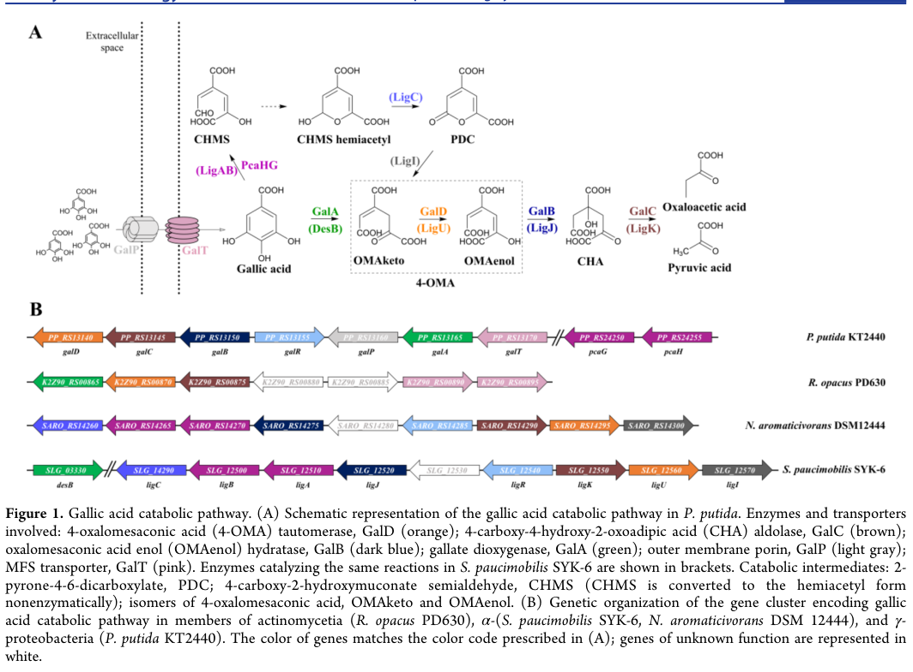

galR encodes an HTH-type transcriptional regulator for the galBCD and galTAP operons of the P. putida KT2440 gallate degradation cluster.
| GO Term | Evidence | Action | Reason |
|---|---|---|---|
|
GO:0003700
DNA-binding transcription factor activity
|
IEA
GO_REF:0000002 |
MODIFY |
Summary: GalR is a DNA-binding transcription factor; falcon deep research shows it acts specifically as a transcriptional activator of the gallate (gal) catabolic cluster, so the more specific child term DNA-binding transcription activator activity is warranted.
Reason: UniProt and InterPro support the HTH LysR-type regulator assignment, and the parent term is correct. However, the 2023 functional study shows GalR positively regulates (activates) the gal cluster promoters, supporting the more informative child GO:0001216 (DNA-binding transcription activator activity).
Proposed replacements:
DNA-binding transcription activator activity
Supporting Evidence:
file:PSEPK/galR/galR-uniprot.txt
Transcriptional regulator for the galBCD and galTAP operons
file:PSEPK/galR/galR-goa.tsv
GO:0003700 DNA-binding transcription factor activity
file:PSEPK/galR/galR-deep-research-falcon.md
GalR is experimentally supported to function as a **transcriptional activator** controlling expression from promoters associated with the gallic-acid utilization cluster when cultures are supplemented with gallic acid
|
|
GO:0005829
cytosol
|
IEA
GO_REF:0000118 |
ACCEPT |
Summary: Cytosol localization is reasonable for a bacterial soluble transcriptional regulator.
Reason: GalR is a soluble bacterial transcriptional regulator, and the TreeGrafter cytosol annotation is consistent with the core regulatory role.
Supporting Evidence:
file:PSEPK/galR/galR-goa.tsv
GO:0005829 cytosol
file:PSEPK/galR/galR-uniprot.txt
HTH-type transcriptional regulator GalR
file:PSEPK/galR/galR-deep-research-falcon.md
Because GalR is a LysR-family HTH transcription factor acting on chromosomal promoters, its functional localization is best inferred as **cytosolic/nucleoid-associated** rather than membrane or extracellular
|
|
GO:0006355
regulation of DNA-templated transcription
|
IEA
GO_REF:0000120 |
MODIFY |
Summary: Regulation of DNA-templated transcription is correct, but falcon deep research establishes the direction of regulation as positive (activation), so the positive-regulation child term is now justified.
Reason: GalR regulates the gal cluster promoters. The original review left the term at the neutral parent because direction was unspecified, but the 2023 functional study shows GalR acts as a transcriptional activator (extra galR increased reporter activation from both gal-cluster promoters), supporting GO:0045893 (positive regulation of DNA-templated transcription).
Proposed replacements:
positive regulation of DNA-templated transcription
Supporting Evidence:
file:PSEPK/galR/galR-uniprot.txt
Transcriptional regulator for the galBCD and galTAP operons
file:PSEPK/galR/galR-goa.tsv
GO:0006355 regulation of DNA-templated transcription
file:PSEPK/galR/galR-deep-research-falcon.md
In reporter constructs, providing an additional copy of **galR** increased activation, consistent with GalR acting as the positive regulator for these promoters
|
Q: Falcon deep research indicates GalR is an activator responding to the pathway intermediate 4-oxalomesaconate (4-OMA) rather than to gallic acid directly; can the keto versus enol form of OMA that binds GalR be resolved experimentally?
Q: Should GalR be annotated to involvement in gallate catabolic process (GO:0019396) as a regulator, or should the review stay at transcriptional regulation until direct DNA-binding/footprinting data confirm the regulon scope?
Experiment: Use promoter reporters and GalR DNA-binding assays with gallate and pathway intermediates to determine regulatory direction and ligand response.
Type: transcription reporter and DNA-binding assay
The research report should be a detailed narrative explaining the function, biological processes, and localization of the gene product. Citations should be given for all claims.
You should prioritize authoritative reviews and primary scientific literature when conducting research. You can supplement
this with annotations you find in gene/protein databases, but these can be outdated or inaccurate.
We are specifically interested in the primary function of the gene - for enzymes, what reaction is catalyzed, and what is the substrate specificity? For transporters, what is the substrate? For structural proteins or adapters, what is the broader structural role? For signaling molecules, what is the role in the pathway.
We are interested in where in or outside the cell the gene product carries out its function.
We are also interested in the signaling or biochemical pathways in which the gene functions. We are less interested in broad pleiotropic effects, except where these elucidate the precise role.
Include evidence where possible. We are interested in both experimental evidence as well as inference from structure, evolution, or bioinformatic analysis. Precise studies should be prioritized over high-throughput, where available.
The symbol galR is highly ambiguous across bacteria (often used for galactose regulon regulators), so functional annotation must be tied to the specified accession/organism. UniProt Q88JX7 is described as an HTH-type LysR-family transcriptional regulator annotated as “gallate degradation protein R / GalR” in P. putida KT2440. A recent primary study on P. putida KT2440 describes a LysR-family transcriptional regulator named GalR that activates the gallic acid (gallate) catabolic gene cluster (the “gal operon/cluster”) (kutraite2023developmentandapplication pages 2-3).
Evidence gap: the 2023 study uses KT2440 locus tags in the PP_RS… namespace (e.g., PP_RS13155 for galR), whereas UniProt Q88JX7 lists the ordered locus as PP_2516; a direct cross-reference between these locus-tag systems was not retrieved in this run, so the mapping Q88JX7/PP_2516 ↔ PP_RS13155 is very likely but not formally demonstrated here (kutraite2023developmentandapplication pages 2-3).
LysR-type transcriptional regulators (LTTRs) are among the most abundant bacterial transcription factors. They typically:
- bind DNA via an N-terminal helix–turn–helix (HTH) domain,
- recognize promoter-proximal motifs that often include an LTTR core (commonly described as a T–N11–A pattern),
- respond to a small-molecule effector/inducer, frequently a pathway intermediate, and
- modulate RNA polymerase engagement through promoter architecture that can involve a regulatory binding site (RBS) and activation binding site (ABS) (kutraite2023developmentandapplication pages 3-4, kutraite2023developmentandapplication pages 2-3).
In P. putida KT2440, gallic acid (gallate; 3,4,5-trihydroxybenzoate) is degraded via a gene cluster/operon including galA, galB, galC, galD, with associated transport genes galT and galP (kutraite2023developmentandapplication pages 2-3, kutraite2023developmentandapplication pages 1-2, kutraite2023developmentandapplication media 003d80a5). The pathway produces the ring-cleavage intermediate 4-oxalomesaconate (4-OMA), which is central both to metabolism and regulation (kutraite2023developmentandapplication pages 1-2, kutraite2023developmentandapplication media 003d80a5).
GalR is experimentally supported to function as a transcriptional activator controlling expression from promoters associated with the gallic-acid utilization cluster when cultures are supplemented with gallic acid (kutraite2023developmentandapplication pages 2-3). In reporter constructs, providing an additional copy of galR increased activation, consistent with GalR acting as the positive regulator for these promoters (kutraite2023developmentandapplication pages 2-3).
The 2023 study frames GalR regulation at the level of the gal operon/cluster, consisting of galA/galB/galC/galD (catabolic enzymes) and linked with galT/galP (transport functions) (kutraite2023developmentandapplication pages 2-3, kutraite2023developmentandapplication pages 1-2). This is reinforced by the pathway/cluster schematic (Figure 1) retrieved from the same study (kutraite2023developmentandapplication media 003d80a5).
Important limitation: while the study provides promoter-level evidence and a cluster model, it explicitly notes that GalR DNA target binding sites have not been experimentally characterized to date (kutraite2023developmentandapplication pages 2-3).
A key recent advance is that GalR does not appear to respond directly to extracellular gallic acid; instead, the system requires GalA activity and the pathway intermediate 4-oxalomesaconate (4-OMA). The authors identify 4-OMA as the primary effector required for activation of the inducible system, and show that induction in non-native hosts requires co-introduction of galA to generate the effector (kutraite2023developmentandapplication pages 1-2, kutraite2023developmentandapplication pages 3-4, kutraite2023developmentandapplication pages 4-6). A biosensor mechanism schematic consistent with “gallic acid uptake → GalA → 4-OMA → GalR activation” was also retrieved (kutraite2023developmentandapplication media 003d80a5).
Open mechanistic question: the study highlights uncertainty about whether the keto and/or enol form of OMA is the active effector, noting the need for further work (kutraite2023developmentandapplication pages 3-4).
Based on comparative sequence analysis of the intergenic promoter region (PP_RS13150/PP_RS13155), the authors describe conserved motifs upstream of galB consistent with canonical LTTR promoter architectures, including an extended motif consistent with a LysR-like core (e.g., CTATA–N9–TATAG) and a putative activation-site motif near the RNAP −35 region (kutraite2023developmentandapplication pages 3-4). However, these motifs are presented as predictions, not confirmed by direct binding assays (kutraite2023developmentandapplication pages 2-3).
Within the P. putida “gal” pathway, GalA is the initiating dioxygenase step producing 4-OMA, after which downstream enzymes (GalB/GalC/GalD in the cluster model) transform intermediates toward central metabolism (kutraite2023developmentandapplication pages 1-2, kutraite2023developmentandapplication media 003d80a5). A synthetic-biology-focused thesis summarizes this pathway as producing central metabolites (reported as pyruvate and oxaloacetate) (rojas2020developmentofsynthetic pages 28-33), but this thesis is not a peer-reviewed primary characterization and should be treated as secondary synthesis.
More broadly, aromatic ring cleavage and downstream assimilation of lignin-derived aromatics is a major theme in environmental/industrial microbiology; classic reviews emphasize bacterial roles in mineralization of lignin-derived low-molecular-weight aromatics and the importance of elucidating enzyme systems for carbon cycling and industrial conversion (masai2007geneticandbiochemical pages 1-3).
The emerging regulatory logic is:
1) transporter functions (GalP/GalT) help bring gallic acid into the cell,
2) GalA converts it to 4-OMA,
3) 4-OMA activates GalR,
4) GalR activates promoter(s) driving the catabolic/transport genes, reinforcing the system when substrate is present (kutraite2023developmentandapplication pages 1-2, kutraite2023developmentandapplication pages 2-3, kutraite2023developmentandapplication pages 4-6, kutraite2023developmentandapplication media 003d80a5).
This “intermediate-as-effector” logic is common in bacterial catabolic regulation and helps prevent unnecessary pathway expression unless flux into the pathway is occurring.
No direct subcellular localization experiments for GalR were retrieved. Given that GalR is a DNA-binding LTTR regulating transcription from chromosomal promoters, its functional location is best inferred as cytosolic/nucleoid-associated (i.e., acting at DNA in the cytoplasm), rather than membrane or extracellular (kutraite2023developmentandapplication pages 2-3, kutraite2023developmentandapplication pages 3-4).
A major 2023 development is the explicit identification of 4-OMA as the primary effector for the P. putida GalR system and the demonstration that GalA is required to generate this effector (kutraite2023developmentandapplication pages 1-2, kutraite2023developmentandapplication pages 4-6). In addition to advancing pathway understanding, the work operationalizes the system as a tunable transcription-factor-based sensor/inducible system (kutraite2023developmentandapplication pages 4-6).
A 2024 Nature Communications study on lignin-related aromatic metabolism in Xanthomonas citri references the conversion of gallate to 4-OMA as a plausible step in lignin-derived aromatic processing frameworks and uses P. putida KT2440 as one of the model organisms in this broader space (martim2024resolvingthemetabolism pages 3-5). While not GalR-specific, this highlights that gallate/OMA chemistry is a recognized node in contemporary aromatic-metabolism research.
The GalR-controlled promoter systems (PPP_RS13150 and PPP_RS13170) have been implemented as whole-cell biosensors and inducible expression systems. In P. putida, both promoters are activated by exogenous gallic acid, and activation is enhanced by providing an additional copy of galR (kutraite2023developmentandapplication pages 2-3).
The same study demonstrates that the system can be ported to non-native hosts, but only works robustly when the host is engineered to generate the true effector 4-OMA (i.e., requires galA, and benefits from transport such as GalT), enabling biosensing in organisms such as E. coli and Cupriavidus necator (kutraite2023developmentandapplication pages 1-2, kutraite2023developmentandapplication pages 3-4).
The P. putida biosensor was applied to estimate gallic acid in green tea extracts, demonstrating a practical analytical use case beyond pure lab standards (kutraite2023developmentandapplication pages 4-6).
In P. putida reporter assays (6 h after inducer addition), GalR-dependent systems showed strong induction, with the PpGalR/PPP_RS13150 system reported as mediating ~45-fold or ~248-fold induction (depending on construct/conditions) (kutraite2023developmentandapplication pages 3-4). Both PPP_RS13150 and PPP_RS13170 promoter regions were activated by exogenous gallic acid, with example reported inductions of approximately 9.7-/2.5-fold or 72.3-/45.6-fold depending on medium/construct (kutraite2023developmentandapplication pages 2-3). A promoter-only construct showed only minor induction (1.7-fold or 6.3-fold), consistent with GalR being required for robust activation (kutraite2023developmentandapplication pages 2-3).
Reported sensitivity metrics include:
- prior/native host system detection down to ~0.5–1 µM gallic acid (as cited in the 2023 study) (kutraite2023developmentandapplication pages 2-3),
- engineered biosensor limits of detection (LOD): ~9.7 µM for the P. putida biosensor (BS1) and ~78 µM for the E. coli biosensor (BS2) (kutraite2023developmentandapplication pages 4-6),
- tunable response range reported at approximately 0.312–1.25 mM extracellular gallic acid (kutraite2023developmentandapplication pages 4-6).
Dynamic ranges (fold induction) were reported as high, including examples up to ~2,138-fold (BS1) and ~162-fold (BS2), with some alternate values in supplementary reporting noted by the authors (kutraite2023developmentandapplication pages 4-6).
A long-standing view in aromatic catabolism is that bacteria are major contributors to mineralization of lignin-derived, low-molecular-weight aromatics in soils and that elucidating pathway genes/enzymes provides tools for industrially useful bioconversion (masai2007geneticandbiochemical pages 1-3). The 2023 GalR study exemplifies this dual scientific/biotechnological value: it clarifies an unusual regulatory feature (intermediate-driven induction via 4-OMA) and immediately deploys it as a biosensing/inducible-expression platform (kutraite2023developmentandapplication pages 1-2, kutraite2023developmentandapplication pages 4-6).
Because “galR” is used for unrelated regulators in other organisms, it is important not to generalize findings across taxa without evidence. For instance, a Lactobacillus plantarum LysR-family regulator (TanR) is required for gene induction in response to methyl gallate/gallic acid, illustrating convergent regulatory logic, but it is not the same gene/protein and should not be conflated with Pseudomonas GalR (reveron2017differentialgeneexpression pages 13-15).
The table below consolidates experimentally supported claims versus inference and highlights evidence gaps.
| Claim about GalR | Evidence type | Key details / quantitative data | Source |
|---|---|---|---|
| Identity is consistent with a LysR-family transcriptional regulator involved in gallate/gallic acid catabolism in Pseudomonas putida KT2440 | Experimental pathway context + bioinformatic family assignment | 2023 study describes GalR as a LysR family TR controlling the gal operon in P. putida KT2440; UniProt Q88JX7 description as an HTH-type LysR regulator is consistent with this functional context. The precise PP_2516 ↔ PP_RS13155 locus-tag crosswalk was not directly shown in retrieved contexts, so synonymy should be treated as probable rather than fully demonstrated here. (kutraite2023developmentandapplication pages 2-3, rojas2020developmentofsynthetic pages 28-33) | Kutraite & Malys, 2023, ACS Synth. Biol., DOI: 10.1021/acssynbio.2c00537, https://doi.org/10.1021/acssynbio.2c00537; Rojas, 2020, thesis/preprint, DOI: 10.11606/d.17.2020.tde-19082020-091727, https://doi.org/10.11606/d.17.2020.tde-19082020-091727 |
| Primary molecular function: transcriptional activator of the gal operon | Experimental | GalR was reported to act as a transcriptional activator of the gal operon when gallic acid is present. Extra plasmid-borne galR increased reporter activation from both tested promoters, supporting an activator role. (kutraite2023developmentandapplication pages 2-3) | Kutraite & Malys, 2023, https://doi.org/10.1021/acssynbio.2c00537 |
| Likely regulon includes genes for gallate degradation and uptake | Experimental + pathway inference | The gal operon comprises galA, galB, galC, galD (catabolic enzymes) and is linked with transport genes galT and galP that aid gallic-acid uptake. This places GalR upstream of both degradation and transport functions. (kutraite2023developmentandapplication pages 2-3, kutraite2023developmentandapplication pages 1-2, rojas2020developmentofsynthetic pages 28-33) | Kutraite & Malys, 2023, https://doi.org/10.1021/acssynbio.2c00537; Rojas, 2020, https://doi.org/10.11606/d.17.2020.tde-19082020-091727 |
| Pathway role: GalR controls entry of gallic acid into a ring-cleavage pathway feeding central metabolism | Experimental pathway characterization + background review | Retrieved contexts place GalR at the head of a pathway where GalA performs gallate ring cleavage to 4-oxalomesaconate (4-OMA), followed by GalD/GalB/GalC reactions that yield metabolites entering central metabolism (reported as pyruvate and oxaloacetate in the thesis summary). (kutraite2023developmentandapplication pages 1-2, rojas2020developmentofsynthetic pages 28-33) | Kutraite & Malys, 2023, https://doi.org/10.1021/acssynbio.2c00537; Rojas, 2020, https://doi.org/10.11606/d.17.2020.tde-19082020-091727 |
| Effector is not gallic acid itself, but the pathway intermediate 4-oxalomesaconate (4-OMA) | Experimental | 2023 functional analysis showed induction requires galA activity and identified 4-OMA as the primary effector interacting with GalR. In non-native hosts, gallic acid did not trigger induction unless galA was also supplied, supporting 4-OMA dependence. (kutraite2023developmentandapplication pages 1-2, kutraite2023developmentandapplication pages 3-4, kutraite2023developmentandapplication pages 4-6, kutraite2023developmentandapplication pages 2-3) | Kutraite & Malys, 2023, https://doi.org/10.1021/acssynbio.2c00537 |
| Mechanism is consistent with canonical LysR-family activation at paired DNA sites | Bioinformatic inference supported by reporter experiments | A conserved ~40-nt region upstream of galB contains motifs resembling LysR RBS/ABS elements, including a LysR-like T-N11-A core in an extended CTATA-N9-TATAG motif; GalR is proposed to bind regulatory and activation sites near the RNAP −35 region. However, the study explicitly notes that GalR target binding sites have not yet been experimentally characterized. (kutraite2023developmentandapplication pages 3-4, kutraite2023developmentandapplication pages 2-3) | Kutraite & Malys, 2023, https://doi.org/10.1021/acssynbio.2c00537 |
| Promoters responsive to GalR include PPP_RS13150 and PPP_RS13170 | Experimental | Both promoter regions were activated by exogenous gallic acid in P. putida. Reported fold induction values included approximately 45- or 248-fold for PpGalR/PPP_RS13150 and approximately 9.7-/2.5-fold or 72.3-/45.6-fold for constructs involving PPP_RS13170 depending on medium/construct configuration. A promoter-only variant showed only minor induction (1.7- or 6.3-fold), consistent with GalR dependence. (kutraite2023developmentandapplication pages 2-3, kutraite2023developmentandapplication pages 3-4, kutraite2023developmentandapplication media 003d80a5) | Kutraite & Malys, 2023, https://doi.org/10.1021/acssynbio.2c00537 |
| Quantitative biosensor implementations confirm strong GalR-dependent responsiveness | Experimental / real-world implementation | GalR-based biosensors were built in P. putida and E. coli. Reported engineered-system metrics include LOD ~9.7 μM for BS1 (P. putida) and 78 μM for BS2 (E. coli), tunable response over about 0.312–1.25 mM extracellular gallic acid, and dynamic ranges reported as up to ~112- and ~2,138-fold (BS1) and ~75- and ~162-fold (BS2), with some alternate values in supplementary reporting. Earlier native detection was noted as 0.5–1 μM. (kutraite2023developmentandapplication pages 4-6, kutraite2023developmentandapplication pages 2-3, kutraite2023developmentandapplication media 003d80a5) | Kutraite & Malys, 2023, https://doi.org/10.1021/acssynbio.2c00537 |
| Transport contributes to GalR system output via GalT/GalP-mediated uptake | Experimental + inference | The 2023 study linked GalR-regulated sensing to GalA, GalT, and likely GalP. In E. coli, which lacks GalT homologs, adding GalT improved reporter output, supporting a role for transport in supplying substrate for conversion to the true effector 4-OMA. (kutraite2023developmentandapplication pages 3-4, kutraite2023developmentandapplication pages 4-6) | Kutraite & Malys, 2023, https://doi.org/10.1021/acssynbio.2c00537 |
| Subcellular localization is most consistent with a cytosolic DNA-binding regulator, but this was not directly tested | Bioinformatic/functional inference | No retrieved paper provided direct localization experiments for GalR. Because GalR is a LysR-family HTH transcription factor acting on chromosomal promoters, its functional localization is best inferred as cytosolic/nucleoid-associated rather than membrane or extracellular. This remains an inference, not direct evidence. (kutraite2023developmentandapplication pages 2-3, kutraite2023developmentandapplication pages 3-4) | Kutraite & Malys, 2023, https://doi.org/10.1021/acssynbio.2c00537 |
| Comparative precedent supports inducer-dependent activation as a plausible regulatory logic for gallate-responsive LysR regulators | Comparative experimental precedent (different organism) | In Lactobacillus plantarum, the LysR-family regulator TanR is required for gene induction in response to methyl gallate/gallic acid, and transporter GacP participates in gallate uptake/export. This does not prove the P. putida mechanism, but supports a broader theme of gallate-responsive LysR regulation coupled to transport/metabolism. (reveron2017differentialgeneexpression pages 13-15) | Reverón et al., 2017, Appl. Environ. Microbiol., DOI: 10.1128/AEM.03387-16, https://doi.org/10.1128/AEM.03387-16 |
| Broader application context: the GalR-controlled pathway is relevant to lignin-aromatic valorization and biosensing | Background review + direct implementation | Reviews and recent aromatic-catabolism studies place gallate/4-OMA chemistry within bacterial conversion of lignin-derived aromatics. In practice, the GalR system has already been implemented as a whole-cell biosensor for gallic acid detection, including application to green tea extracts. (masai2007geneticandbiochemical pages 1-3, martim2024resolvingthemetabolism pages 3-5, kutraite2023developmentandapplication media 003d80a5) | Masai et al., 2007, Biosci. Biotechnol. Biochem., DOI: 10.1271/bbb.60437, https://doi.org/10.1271/bbb.60437; Martim et al., 2024, Nat. Commun., DOI: 10.1038/s41467-024-52367-6, https://doi.org/10.1038/s41467-024-52367-6; Kutraite & Malys, 2023, https://doi.org/10.1021/acssynbio.2c00537 |
Table: This table consolidates the main functional-annotation claims for Pseudomonas putida KT2440 GalR, separating direct experimental support from bioinformatic inference. It highlights what is well supported for GalR (activator role, 4-OMA effector, target pathway context, biosensor performance) and where evidence gaps remain.
1) Definitive identifier crosswalk: explicitly map UniProt Q88JX7 / PP_2516 to the PP_RS13155 identifier used in recent literature via genome annotations or UniProt/NCBI cross-references (gap noted in this run) (kutraite2023developmentandapplication pages 2-3).
2) Direct GalR–DNA interaction evidence: confirm predicted RBS/ABS sites by EMSA, DNase I footprinting, ChIP-seq, and/or promoter mutagenesis targeted to the predicted motifs (kutraite2023developmentandapplication pages 2-3, kutraite2023developmentandapplication pages 3-4).
3) Effector chemistry: resolve whether OMAketo vs OMAenol (or both) binds GalR and determine binding constants (kutraite2023developmentandapplication pages 3-4).
4) Regulon breadth: determine whether GalR regulates additional genes beyond the immediate gal cluster under relevant environmental conditions.
References
(kutraite2023developmentandapplication pages 2-3): Ingrida Kutraite and Naglis Malys. Development and application of whole-cell biosensors for the detection of gallic acid. ACS Synthetic Biology, 12:533-543, Feb 2023. URL: https://doi.org/10.1021/acssynbio.2c00537, doi:10.1021/acssynbio.2c00537. This article has 35 citations and is from a domain leading peer-reviewed journal.
(kutraite2023developmentandapplication pages 3-4): Ingrida Kutraite and Naglis Malys. Development and application of whole-cell biosensors for the detection of gallic acid. ACS Synthetic Biology, 12:533-543, Feb 2023. URL: https://doi.org/10.1021/acssynbio.2c00537, doi:10.1021/acssynbio.2c00537. This article has 35 citations and is from a domain leading peer-reviewed journal.
(kutraite2023developmentandapplication pages 1-2): Ingrida Kutraite and Naglis Malys. Development and application of whole-cell biosensors for the detection of gallic acid. ACS Synthetic Biology, 12:533-543, Feb 2023. URL: https://doi.org/10.1021/acssynbio.2c00537, doi:10.1021/acssynbio.2c00537. This article has 35 citations and is from a domain leading peer-reviewed journal.
(kutraite2023developmentandapplication media 003d80a5): Ingrida Kutraite and Naglis Malys. Development and application of whole-cell biosensors for the detection of gallic acid. ACS Synthetic Biology, 12:533-543, Feb 2023. URL: https://doi.org/10.1021/acssynbio.2c00537, doi:10.1021/acssynbio.2c00537. This article has 35 citations and is from a domain leading peer-reviewed journal.
(kutraite2023developmentandapplication pages 4-6): Ingrida Kutraite and Naglis Malys. Development and application of whole-cell biosensors for the detection of gallic acid. ACS Synthetic Biology, 12:533-543, Feb 2023. URL: https://doi.org/10.1021/acssynbio.2c00537, doi:10.1021/acssynbio.2c00537. This article has 35 citations and is from a domain leading peer-reviewed journal.
(rojas2020developmentofsynthetic pages 28-33): Maria Juliana Rolon Rojas. Development of synthetic biology tools by methods in silico and in vivo applied to bacteria of biotechnology importance. ArXiv, Mar 2020. URL: https://doi.org/10.11606/d.17.2020.tde-19082020-091727, doi:10.11606/d.17.2020.tde-19082020-091727. This article has 0 citations.
(masai2007geneticandbiochemical pages 1-3): Eiji MASAI, Yoshihiro KATAYAMA, and Masao FUKUDA. Genetic and biochemical investigations on bacterial catabolic pathways for lignin-derived aromatic compounds. Bioscience, Biotechnology, and Biochemistry, 71:1-15, Jan 2007. URL: https://doi.org/10.1271/bbb.60437, doi:10.1271/bbb.60437. This article has 635 citations.
(martim2024resolvingthemetabolism pages 3-5): Damaris B. Martim, Anna J. V. C. Brilhante, Augusto R. Lima, Douglas A. A. Paixão, Joaquim Martins-Junior, Fernanda M. Kashiwagi, Lucia D. Wolf, Mariany S. Costa, Fabrícia F. Menezes, Rafaela Prata, Matheus C. Gazolla, Juliana A. Aricetti, Gabriela F. Persinoti, George J. M. Rocha, and Priscila O. Giuseppe. Resolving the metabolism of monolignols and other lignin-related aromatic compounds in xanthomonas citri. Nature Communications, Sep 2024. URL: https://doi.org/10.1038/s41467-024-52367-6, doi:10.1038/s41467-024-52367-6. This article has 14 citations and is from a highest quality peer-reviewed journal.
(reveron2017differentialgeneexpression pages 13-15): Inés Reverón, Natalia Jiménez, José Antonio Curiel, Elena Peñas, Félix López de Felipe, Blanca de las Rivas, and Rosario Muñoz. Differential gene expression by lactobacillus plantarum wcfs1 in response to phenolic compounds reveals new genes involved in tannin degradation. Applied and Environmental Microbiology, Apr 2017. URL: https://doi.org/10.1128/aem.03387-16, doi:10.1128/aem.03387-16. This article has 66 citations and is from a peer-reviewed journal.

id: Q88JX7
gene_symbol: galR
product_type: PROTEIN
status: DRAFT
taxon:
id: NCBITaxon:160488
label: Pseudomonas putida (strain ATCC 47054 / DSM 6125 / CFBP 8728 / NCIMB 11950 / KT2440)
description: galR encodes an HTH-type transcriptional regulator for the galBCD and galTAP operons of the P. putida KT2440 gallate degradation cluster.
existing_annotations:
- term:
id: GO:0003700
label: DNA-binding transcription factor activity
evidence_type: IEA
original_reference_id: GO_REF:0000002
review:
summary: GalR is a DNA-binding transcription factor; falcon deep research shows it acts
specifically as a transcriptional activator of the gallate (gal) catabolic cluster,
so the more specific child term DNA-binding transcription activator activity is warranted.
action: MODIFY
reason: UniProt and InterPro support the HTH LysR-type regulator assignment, and the parent
term is correct. However, the 2023 functional study shows GalR positively regulates (activates)
the gal cluster promoters, supporting the more informative child GO:0001216 (DNA-binding
transcription activator activity).
proposed_replacement_terms:
- id: GO:0001216
label: DNA-binding transcription activator activity
supported_by:
- reference_id: file:PSEPK/galR/galR-uniprot.txt
supporting_text: Transcriptional regulator for the galBCD and galTAP operons
- reference_id: file:PSEPK/galR/galR-goa.tsv
supporting_text: "GO:0003700\tDNA-binding transcription factor activity"
- reference_id: file:PSEPK/galR/galR-deep-research-falcon.md
supporting_text: |-
GalR is experimentally supported to function as a **transcriptional activator** controlling expression from promoters associated with the gallic-acid utilization cluster when cultures are supplemented with gallic acid
- term:
id: GO:0005829
label: cytosol
evidence_type: IEA
original_reference_id: GO_REF:0000118
review:
summary: Cytosol localization is reasonable for a bacterial soluble transcriptional regulator.
action: ACCEPT
reason: GalR is a soluble bacterial transcriptional regulator, and the TreeGrafter cytosol annotation is consistent with the core regulatory role.
supported_by:
- reference_id: file:PSEPK/galR/galR-goa.tsv
supporting_text: "GO:0005829\tcytosol"
- reference_id: file:PSEPK/galR/galR-uniprot.txt
supporting_text: HTH-type transcriptional regulator GalR
- reference_id: file:PSEPK/galR/galR-deep-research-falcon.md
supporting_text: |-
Because GalR is a LysR-family HTH transcription factor acting on chromosomal promoters, its functional localization is best inferred as **cytosolic/nucleoid-associated** rather than membrane or extracellular
- term:
id: GO:0006355
label: regulation of DNA-templated transcription
evidence_type: IEA
original_reference_id: GO_REF:0000120
review:
summary: Regulation of DNA-templated transcription is correct, but falcon deep research
establishes the direction of regulation as positive (activation), so the positive-regulation
child term is now justified.
action: MODIFY
reason: GalR regulates the gal cluster promoters. The original review left the term at the
neutral parent because direction was unspecified, but the 2023 functional study shows GalR
acts as a transcriptional activator (extra galR increased reporter activation from both
gal-cluster promoters), supporting GO:0045893 (positive regulation of DNA-templated transcription).
proposed_replacement_terms:
- id: GO:0045893
label: positive regulation of DNA-templated transcription
supported_by:
- reference_id: file:PSEPK/galR/galR-uniprot.txt
supporting_text: Transcriptional regulator for the galBCD and galTAP operons
- reference_id: file:PSEPK/galR/galR-goa.tsv
supporting_text: "GO:0006355\tregulation of DNA-templated transcription"
- reference_id: file:PSEPK/galR/galR-deep-research-falcon.md
supporting_text: |-
In reporter constructs, providing an additional copy of **galR** increased activation, consistent with GalR acting as the positive regulator for these promoters
references:
- id: GO_REF:0000002
title: Gene Ontology annotation through association of InterPro records with GO terms
findings:
- statement: InterPro supplied DNA-binding transcription factor activity for GalR.
- id: GO_REF:0000118
title: TreeGrafter-generated GO annotations
findings:
- statement: TreeGrafter supplied cytosol localization for GalR.
- id: GO_REF:0000120
title: Combined automated GO annotation using multiple IEA methods
findings:
- statement: Automated annotations supply regulation of DNA-templated transcription for GalR.
- id: file:PSEPK/galR/galR-uniprot.txt
title: UniProtKB reviewed entry for galR
findings:
- statement: UniProt identifies GalR as the transcriptional regulator of the galBCD and galTAP operons.
- id: PMID:21219457
title: 'Unravelling the gallic acid degradation pathway in bacteria: the gal cluster from Pseudomonas putida'
findings:
- statement: The gal-cluster paper characterizes the KT2440 gallate degradation gene cluster.
- id: file:PSEPK/galR/galR-goa.tsv
title: QuickGO GOA annotations for galR
findings:
- statement: The fetched GOA table contains the annotations reviewed for galR.
- id: file:PSEPK/galR/galR-deep-research-falcon.md
title: Falcon (Edison Scientific) deep research report on P. putida KT2440 galR (Q88JX7)
findings:
- statement: |-
GalR is experimentally supported to function as a **transcriptional activator** controlling expression from promoters associated with the gallic-acid utilization cluster when cultures are supplemented with gallic acid
reference_section_type: OTHER
- statement: |-
The 2023 study frames GalR regulation at the level of the **gal operon/cluster**, consisting of **galA/galB/galC/galD** (catabolic enzymes) and linked with **galT/galP** (transport functions)
reference_section_type: OTHER
- statement: |-
The authors identify 4-OMA as the **primary effector required** for activation of the inducible system, and show that induction in non-native hosts requires co-introduction of **galA** to generate the effector
reference_section_type: OTHER
- statement: |-
Because GalR is a LysR-family HTH transcription factor acting on chromosomal promoters, its functional localization is best inferred as **cytosolic/nucleoid-associated** rather than membrane or extracellular
reference_section_type: OTHER
- statement: |-
it explicitly notes that **GalR DNA target binding sites have not been experimentally characterized to date**
reference_section_type: OTHER
core_functions:
- description: LysR-type DNA-binding transcriptional activator of the gallate (gal) catabolic
cluster (galA/galB/galC/galD plus transport genes galT/galP) in P. putida KT2440. GalR
activates these promoters in response to the pathway intermediate 4-oxalomesaconate (4-OMA),
which is generated by GalA from gallic acid, rather than to gallic acid directly.
molecular_function:
id: GO:0001216
label: DNA-binding transcription activator activity
directly_involved_in:
- id: GO:0045893
label: positive regulation of DNA-templated transcription
locations:
- id: GO:0005829
label: cytosol
supported_by:
- reference_id: file:PSEPK/galR/galR-uniprot.txt
supporting_text: Transcriptional regulator for the galBCD and galTAP operons
- reference_id: file:PSEPK/galR/galR-deep-research-falcon.md
supporting_text: |-
GalR is experimentally supported to function as a **transcriptional activator** controlling expression from promoters associated with the gallic-acid utilization cluster when cultures are supplemented with gallic acid
- reference_id: file:PSEPK/galR/galR-deep-research-falcon.md
supporting_text: |-
The authors identify 4-OMA as the **primary effector required** for activation of the inducible system, and show that induction in non-native hosts requires co-introduction of **galA** to generate the effector
proposed_new_terms: []
suggested_questions:
- question: Falcon deep research indicates GalR is an activator responding to the pathway
intermediate 4-oxalomesaconate (4-OMA) rather than to gallic acid directly; can the keto
versus enol form of OMA that binds GalR be resolved experimentally?
- question: Should GalR be annotated to involvement in gallate catabolic process (GO:0019396)
as a regulator, or should the review stay at transcriptional regulation until direct
DNA-binding/footprinting data confirm the regulon scope?
suggested_experiments:
- description: Use promoter reporters and GalR DNA-binding assays with gallate and pathway intermediates to determine regulatory direction and ligand response.
experiment_type: transcription reporter and DNA-binding assay
{kind=link}